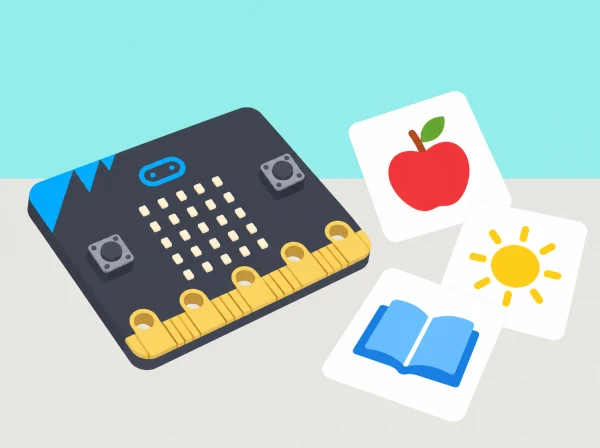

Paraules en targetes digitals
🏷️ Vocabulari i representació
🌱 Situació, repte i intenció
🎯 Aprenentatges i vocabulari
- Seleccionar vocabulari adequat al grup i representar-lo amb text breu o icones pròpies.
- Programar una targeta amb seqüència, patró, pausa i una entrada de control.
- Provar si la targeta ajuda una altra parella a recordar o reconéixer una paraula sense pressa.
- Crear alternatives llegibles que no depenguen només del color, la velocitat de lectura o la resposta oral.
🧰 Materials i preparació
BBC micro:bit física o simulador, MakeCode, targetes de vocabulari, fulls 5×5 per esbossar píxels i una fitxa per a cada targeta amb cinc camps: paraula i significat, pista visual, seqüència, prova externa i revisió. Seleccioneu paraules que l’alumnat ja haja treballat i acordeu la llengua amb el docent de l’àrea. No cal connexió externa ni cap compte d’usuari.
📅 Seqüència didàctica
Algorismes de flashcards (Flashcard algorithms)
Fase 1 · Activem i prediem
Trieu huit paraules d’una unitat ja treballada, com animals o objectes de classe. En parelles, repartiu els rols de qui mostra la pista i qui respon. Predigueu quines instruccions necessita l’altra persona des que apareix la icona fins que arriba el torn de resposta.
Fase 2 · Explorem i construïm
Escriviu una seqüència d’instruccions amb inici, pista, temps per pensar, resposta i canvi de torn. Intercanvieu rols i proveu les instruccions amb una parella nova, sense explicar-les oralment.
Fase 3 · Expliquem i registrem
Anoteu en quin pas s’ha aturat la parella o ha interpretat una instrucció d’una altra manera. Si «espera un poc» és ambigu, identifiqueu què no queda definit: durada, senyal per continuar o moment de resposta.
Fase 4 · Apliquem i millorem
Substituïu instruccions ambigües per una pausa acordada i un senyal clar per continuar. Torneu a provar la targeta amb una parella que no l’haja creada.
Fase 5 · Comprovem i reflexionem
Comproveu si qualsevol parella pot usar la targeta sense ajuda dels autors.
Abstracció i programació (Abstraction & programming)
Fase 1 · Activem i prediem
Seleccioneu quatre paraules conegudes i determineu quina característica visual seria imprescindible per reconéixer cadascuna. Predigueu què es perdrà en reduir una imatge a 25 píxels.
Fase 2 · Explorem i construïm
Dibuixeu una icona 5×5 per a cada paraula i passeu la seqüència a MakeCode. Manteniu la paraula completa en la targeta física: la matriu LED és una pista visual, no una representació ortogràfica exhaustiva.
Fase 3 · Expliquem i registrem
Compareu dues versions de cada icona i anoteu quina característica han conservat i què han simplificat. Deseu la graella, el programa i la justificació.
Fase 4 · Apliquem i millorem
Passeu les targetes a un grup que no haja participat en el disseny. Demaneu que explique què interpreta abans de revelar la resposta i reviseu la icona si les pistes no resulten clares.
Fase 5 · Comprovem i reflexionem
Expliqueu què aporta la imatge digital i què continuen aportant l’ortografia, el so i el significat de la targeta física.
Patrons i pauses (Patterns & delays)
Fase 1 · Activem i prediem
Trieu tres flashcards i ordeneu-les en un patró repetit. Predigueu en quin moment apareixerà cada pista i quant temps necessita el jugador abans de respondre.
Fase 2 · Explorem i construïm
Representeu el patró amb icones de paper i després programeu-lo a MakeCode amb una pausa entre pista i resposta. La transició serà una pausa seguida d’una imatge estable; no useu pampallugues ràpides.
Fase 3 · Expliquem i registrem
Proveu dues durades d’espera i registreu què ha pogut fer l’audiència en cada cas. Deixeu que les persones participants indiquen quina durada els facilita el torn.
Fase 4 · Apliquem i millorem
Ajusteu la pausa segons el retorn i torneu a provar el mateix patró. Manteniu constants les altres instruccions per poder comparar l’efecte del canvi.
Fase 5 · Comprovem i reflexionem
Comproveu que l’ordre es conserva i que hi ha temps suficient per pensar o passar el torn.
Predir i experimentar (Predicting & experimenting)
Fase 1 · Activem i prediem
Abans d’executar el programa, dibuixeu els LED que espereu veure i descriviu quan apareixerà cada imatge. Planifiqueu una targeta numèrica amb els criteris acordats pel grup.
Fase 2 · Explorem i construïm
Proveu l’esbós al simulador o a la placa. Compareu diferents maneres de controlar els LED i incorporeu la targeta numèrica seguint la mateixa convenció que les icones de vocabulari.
Fase 3 · Expliquem i registrem
Compareu la predicció amb el resultat i registreu quina instrucció o esdeveniment ha produït una diferència. Si la icona no apareix com s’esperava, reviseu graella, ordre dels blocs i entrades.
Fase 4 · Apliquem i millorem
Canvieu una sola instrucció cada vegada i torneu a executar la prova. Comproveu si la targeta numèrica respecta l’ordre i la llegenda compartits.
Fase 5 · Comprovem i reflexionem
Expliqueu quina prova ha confirmat o refutat la predicció i quina part del programa s’ha revisat.
Depurar i avaluar (Debugging & evaluating)
Fase 1 · Activem i prediem
Intercanvieu la flashcard amb una altra parella, que la provarà sense instruccions orals dels autors. Abans de començar, acordeu els criteris: icona visible, pausa suficient, seqüència correcta, resposta en el moment esperat i opció de passar.
Fase 2 · Explorem i construïm
La parella provadora recorre el joc i registra què entén, quan rep la pista i si pot passar o demanar que es repetisca. No avalueu la rapidesa ni la pronunciació en una llengua que l’alumne està aprenent.
Fase 3 · Expliquem i registrem
Compareu els resultats amb la llista de criteris i descriviu un punt concret que haja dificultat el joc. Accepteu respostes orals, escrites, assenyalades o amb comunicació augmentativa.
Fase 4 · Apliquem i millorem
Depureu un element i documenteu què ha canviat. Torneu a provar la targeta i compareu la claredat i el temps d’espera.
Fase 5 · Comprovem i reflexionem
Valoreu què ajuda a practicar la micro:bit i què requereix veu, escriptura o una targeta gran.
🧪 Evidències i avaluació
Recolliu l’algorisme inicial, el vocabulari seleccionat, les graelles d’icones, les prediccions, el programa, les proves entre parelles i la revisió dels criteris. La fitxa de cada paraula documenta significat, simplificació visual, seqüència, interpretació externa i canvi aplicat. Valoreu si les instruccions s’entenen, si el codi respecta la seqüència i si la representació digital complementa el vocabulari sense substituir-ne la forma escrita o oral.
♿ Participació, accessibilitat i seguretat
Roteu els rols de creador/a de vocabulari, dibuixant de píxels, programador/a i provador/a; amb poques plaques, feu primer la seqüència sencera en paper. Oferiu contrast elevat, imatges estàtiques, targetes impreses amb lletra gran i lectura en veu alta. La persona pot treballar amb el simulador o observar una demostració; accepteu respostes orals, escrites, assenyalades o amb comunicació augmentativa. Doneu temps de pensar, repetiu la pista quan es demane i permeteu passar el torn.
No avalueu la rapidesa ni la pronunciació en una llengua que l’alumne està aprenent. No mostreu seqüències LED intermitents ràpides ni useu la placa com a únic canal d’informació.
🔗 Referents i adaptació
- Micro:bit Educational Foundation, Digital flashcards: unitat de cinc lliçons per a alumnat de 7–8 anys; la pàgina publica els objectius de cada lliçó i la seqüència de vocabulari, algoritmes, icones, patrons, pauses, experimentació i depuració. El material oficial està sota CC BY-SA 4.0.
- Aquesta adaptació canvia el context, el vocabulari, les icones, els criteris de prova i les fitxes de treball. No reutilitza les imatges ni els materials imprimibles de la unitat original. Es comparteix sota la mateixa llicència CC BY-SA 4.0.